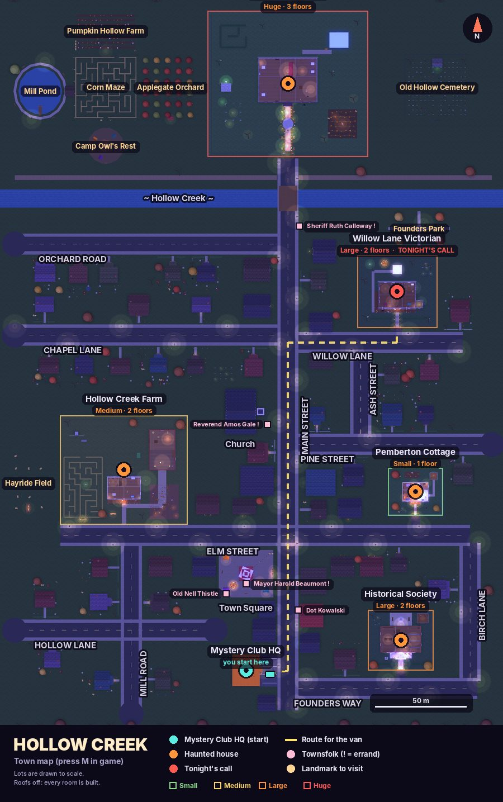
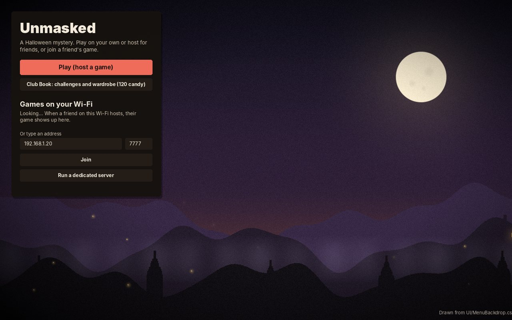
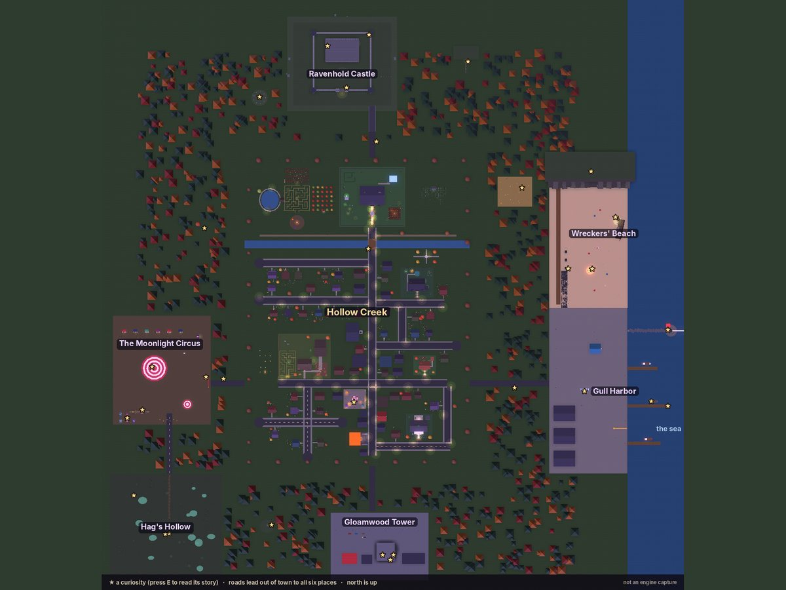

Solve the haunting. Unmask the person.
Unmasked is a storybook Halloween mystery for up to five friends. Your club takes calls from haunted houses in the little town of Hollow Creek, hunts for clues by flashlight and works out which neighbour is hiding behind a folklore mask. The catch: one of you is that neighbour.
Play a case
Every case from the game, straight from its case files. Search the house for clues, cross off anyone who doesn't fit, check an alibi, then make your accusation. You get two tries, like the club does.
Opening the case file…
The case file wouldn't open.
Something went wrong loading the cases.
Evidence
No clues yet. Search the house to find the first one. Any two true clues name the culprit.
How a night goes
A match is one Halloween night, from the first call to the last chance at dawn. Up to four Solvers work the case; the fifth player is the Haunter, dressed as a legend and secretly one of the suspects. No one free to haunt? The game's AI (artificial intelligence) Director haunts the house, and once the culprit is named they put on the costume and try to dodge your trap.
Mystery Club HQ
The host picks a call from the board. Suspects, clues and gossip all depend on the house.
The van
Someone takes the wheel. M opens the town map and an arrow points the way.
The house
Four neighbours are already there, each with an alibi and a reason to want the mask.
Clues
Things that glow in your flashlight are clues. Each fits two suspects or just one.
The Suspect Board
Tab opens it. Cross people off, check an alibi, listen to witnesses who saw a scare.
The accusation
Two tries. The wrong name costs you time, and the Haunter gets braver.
The trap
Carry the pieces to the trap site, build it and lure the costumed Haunter in.
The unmasking
The mask comes off, the motive comes out and the house throws a party.
Five houses on the call board
Each one is its own case, with its own neighbours. Solve one and it calls again later with a second mystery.
Pictures are renders from the game's level files, not Unity captures.
A whole town to walk
Between calls, Hollow Creek is yours: eleven streets of lit-up houses with a family behind every door, a corn maze, the old cemetery, the mill pond and more. The Club Book keeps track of everything you do.

Places to find
Trick or treat
The map is drawn from the game's level file, not a Unity capture.
The Club Book
Challenges in chapters. None of them expire, and nothing is lost for taking a break.
The Wardrobe
Every look costs candy, and candy only comes from playing. Nothing in Unmasked is sold for money.
Past the edge of town
Drive the van out of Hollow Creek and the roads lead to six haunted places: Ravenhold Castle up in the hills, the Moonlight Circus, Gloamwood Tower, Saltmarsh Lighthouse at Gull Harbor, the wreck on Wreckers' Beach and Old Mother Gloam's cottage in Hag's Hollow. Thirty-two curiosities are hidden along the way, each with a story.


Screens are drawn from the game's own code and level file, not Unity captures. The devices are drawn in CSS.
Tonight's legend
Hollow Creek's festival masks really work. Whoever wears one gets that legend's power, and the Haunter is the one wearing it.
Where the game is
Built in rounds. Everything compiles against Unity's libraries and every case is checked for a fair solution, but nobody has played it inside Unity yet.
Get the game
Unmasked is made with Unity 6 and its Netcode for GameObjects library for online play.
Play a build
Download the zip for your computer from the Releases page, unzip it and run Unmasked. One person hosts, everyone else joins with the host's address.
Open it in Unity
Install Unity 6000.0.32f1 with Unity Hub, add the project folder and open it. The first open builds the town for you.
From a terminal
On Ubuntu, this gets the project and the unmasked helper command.
git clone https://github.com/Normansrule/unmasked.git ~/unmasked
bash ~/unmasked/tools/unmasked.sh setup
unmasked help